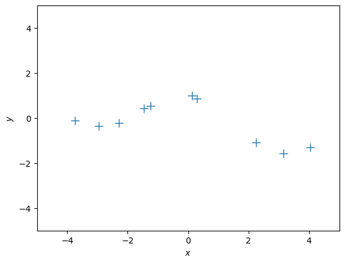
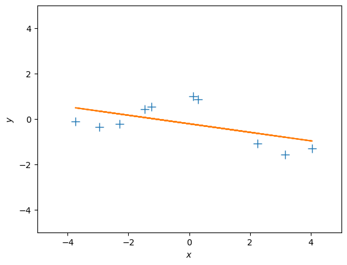
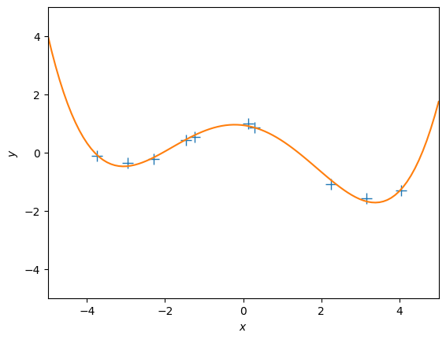
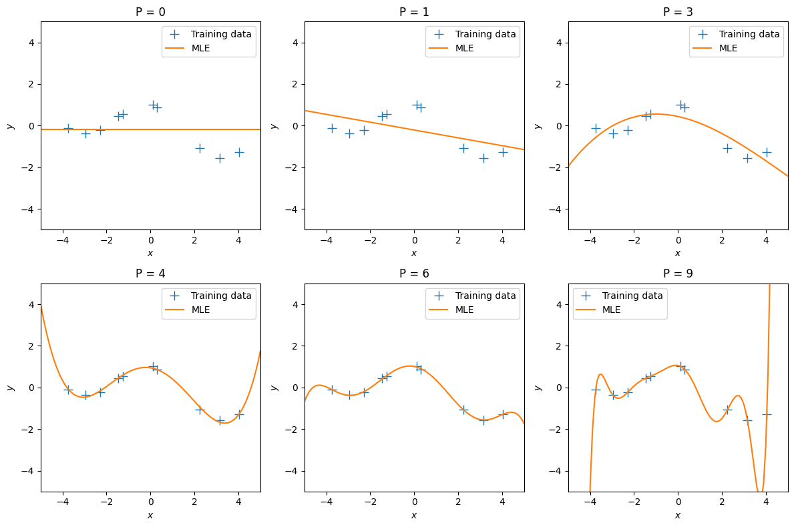
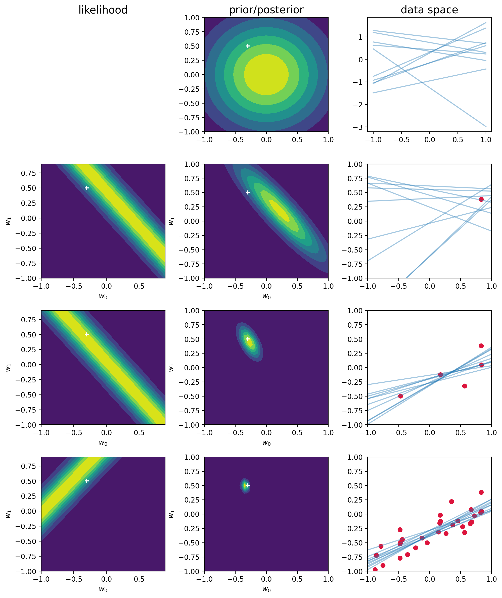

import random
import math
import matplotlib.pyplot as plt
import numpy as np
import scipy
from scipy.stats import multivariate_normal, norm
from numpy.random import seed, uniform, randn
from numpy.linalg import invPlots for bayesian LR
9.3
$$ \
\
x_{n} y_{n} \
n = 1,……,N \
\
$$
figure 9.5
N = 10
mu = 0
sigma = 0.2**2
xn = np.random.uniform(-5, 5, N)
epsilon = np.random.normal(mu, sigma, N)
yn = -np.sin(xn/5) + np.cos(xn) + epsilon
dataset = np.column_stack((xn, yn))
xn = xn.reshape(-1,1)
yn = yn.reshape(-1,1)# Plot the training set
plt.figure()
plt.plot(xn, yn, '+', markersize=10)
plt.xlabel("$x$")
plt.ylabel("$y$")
plt.ylim(-5, 5)
plt.xlim(-5, 5) (-5.0, 5.0)
N, D = xn.shape
X_aug = np.hstack([np.ones((N,1)), xn]) # augmented training inputs of size N x (D+1)
# theta_aug = np.zeros((D+1, 1)) # new theta vector of size (D+1) x 1def max_lik_estimate(X, y):
# X: N x D matrix of training inputs
# y: N x 1 vector of training targets/observations
# returns: maximum likelihood parameters (D x 1)
N, D = X.shape
theta_ml = np.linalg.solve(X.T @ X, X.T @ y) ## <-- SOLUTION
return theta_mltheta_aug_ml = max_lik_estimate(X_aug, yn)
theta_aug_mlarray([[-0.2123287 ],
[-0.18826531]])ml_predictions = X_aug @ theta_aug_ml
# X: K x D matrix of test inputs
# theta: D x 1 vector of parameters
# returns: prediction of f(X); K x 1 vectorml_predictions.shape(10, 1)# Plot the training set
plt.figure()
plt.plot(xn, yn, '+', markersize=10)
plt.plot(xn, ml_predictions)
plt.xlabel("$x$")
plt.ylabel("$y$")
plt.ylim(-5, 5)
plt.xlim(-5, 5) (-5.0, 5.0)
def poly_features(X, p):
"""Returns a matrix with p columns containing the polynomial features of the input vector X."""
X = X.flatten()
return np.array([1.0*X**i for i in range(p+1)]).Tdef nonlinear_features_maximum_likelihood(Phi, y):
# Phi: features matrix for training inputs. Size of N x D
# y: training targets. Size of N by 1
# returns: maximum likelihood estimator theta_ml. Size of D x 1
kappa = 1e-08 # 'jitter' term; good for numerical stability
D = Phi.shape[1]
# maximum likelihood estimate
Pt = Phi.T @ y # Phi^T*y
PP = Phi.T @ Phi + kappa*np.eye(D) # Phi^T*Phi + kappa*I
# maximum likelihood estimate
C = scipy.linalg.cho_factor(PP)
theta_ml = scipy.linalg.cho_solve(C, Pt) # inv(Phi^T*Phi)*Phi^T*y
return theta_mlp = 4
Phi = poly_features(xn, p)
theta_ml = nonlinear_features_maximum_likelihood(Phi, yn)
X_test = np.linspace(-5,5, 100).reshape(-1,1)
Phi_test = poly_features(X_test, p)
y_pred = Phi_test @ theta_ml# Plot the training set
plt.figure()
plt.plot(xn, yn, '+', markersize=10)
plt.plot(X_test, y_pred)
plt.xlabel("$x$")
plt.ylabel("$y$")
plt.ylim(-5, 5)
plt.xlim(-5, 5) (-5.0, 5.0)
Figure 9.6
# Values of p to consider
p_values = [0, 1, 3, 4, 6, 9]
# Create a 2x3 grid of subplots
fig, axs = plt.subplots(2, 3, figsize=(12, 8))
for i, p in enumerate(p_values):
Phi = poly_features(xn, p)
theta_ml = nonlinear_features_maximum_likelihood(Phi, yn)
Phi_test = poly_features(X_test, p)
y_pred = Phi_test @ theta_ml
ax = axs[i // 3, i % 3] # Get the correct subplot
ax.plot(xn, yn, '+', markersize=10,label='Training data')
ax.plot(X_test, y_pred, label = 'MLE')
ax.set_xlabel("$x$")
ax.set_ylabel("$y$")
ax.set_ylim(-5, 5)
ax.set_xlim(-5, 5)
ax.set_title(f"P = {p}")
ax.legend()
# Adjust the spacing between subplots
plt.tight_layout()
# Display the plot
plt.show()
%config InlineBackend.figure_format = "retina"def f(x, a): return a[0] + a[1] * x
def plot_prior(m, S, liminf=-1, limsup=1, step=0.05, ax=plt, **kwargs):
grid = np.mgrid[liminf:limsup + step:step, liminf:limsup + step:step]
nx = grid.shape[-1]
z = multivariate_normal.pdf(grid.T.reshape(-1, 2), mean=m.ravel(), cov=S).reshape(nx, nx).T
return ax.contourf(*grid, z, **kwargs)
def plot_sample_w(mean, cov, size=10, ax=plt):
w = np.random.multivariate_normal(mean=mean.ravel(), cov=cov, size=size)
x = np.linspace(-1, 1)
for wi in w:
ax.plot(x, f(x, wi), c="tab:blue", alpha=0.4)
def plot_likelihood_obs(X, T, ix, ax=plt):
"""
Plot the likelihood function of a single observation
"""
W = np.mgrid[-1:1:0.1, -1:1:0.1]
x, t = sample_vals(X, T, ix) # ith row
mean = W.T.reshape(-1, 2) @ x.T
likelihood = norm.pdf(t, loc=mean, scale= np.sqrt(1 / beta)).reshape(20, 20).T
ax.contourf(*W, likelihood)
ax.scatter(-0.3, 0.5, c="white", marker="+")
def sample_vals(X, T, ix):
"""
Returns
-------
Phi: The linear model transormation
t: the target datapoint
return ith data
"""
x_in = X[ix]
Phi = np.c_[np.ones_like(x_in), x_in]
t = T[[ix]]
return Phi, t
def posterior_w(phi, t, S0, m0):
"""
Compute the posterior distribution of
a Gaussian with known precision and conjugate
prior a gaussian
Parameters
----------
phi: np.array(N, M)
t: np.array(N, 1)
S0: np.array(M, M)
The prior covariance matrix
m0: np.array(M, 1)
The prior mean vector
"""
SN = inv(inv(S0) + beta * phi.T @ phi)
mN = SN @ (inv(S0) @ m0 + beta * phi.T @ t)
return SN, mNseed(314)
a = np.array([-0.3, 0.5])
N = 30
sigma = 0.2
X = uniform(-1, 1, (N, 1))
T = f(X, a) + randn(N, 1) * sigmabeta = (1 / sigma) ** 2 # precision
alpha = 2.0SN = np.eye(2) / alpha
mN = np.zeros((2, 1))
seed(1643)nobs = [1, 5,30]
ix_fig = 1
fig, ax = plt.subplots(len(nobs) + 1, 3, figsize=(10, 12))
plot_prior(mN, SN, ax=ax[0,1])
ax[0, 1].scatter(-0.3, 0.5, c="white", marker="+")
ax[0, 0].axis("off")
plot_sample_w(mN, SN, ax=ax[0, 2])
for i in range(0, N):
Phi, t = sample_vals(X, T, i)
SN, mN = posterior_w(Phi, t, SN, mN)
if i+1 in nobs:
plot_likelihood_obs(X, T, i, ax=ax[ix_fig, 0])
plot_prior(mN, SN, ax=ax[ix_fig, 1])
ax[ix_fig, 1].scatter(-0.3, 0.5, c="white", marker="+")
ax[ix_fig, 2].scatter(X[:i + 1], T[:i + 1], c="crimson")
ax[ix_fig, 2].set_xlim(-1, 1)
ax[ix_fig, 2].set_ylim(-1, 1)
for l in range(2):
ax[ix_fig, l].set_xlabel("$w_0$")
ax[ix_fig, l].set_ylabel("$w_1$")
plot_sample_w(mN, SN, ax=ax[ix_fig, 2])
ix_fig += 1
titles = ["likelihood", "prior/posterior", "data space"]
for axi, title in zip(ax[0], titles):
axi.set_title(title, size=15)
plt.tight_layout()